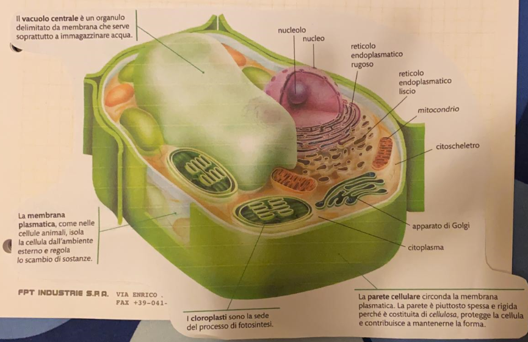
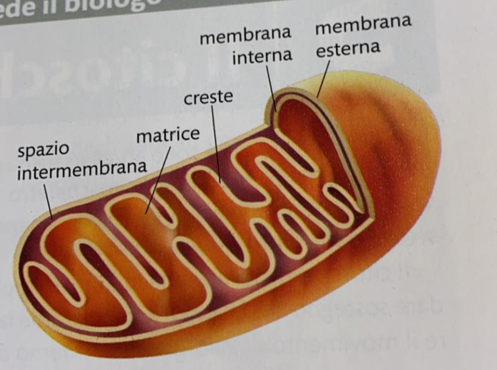
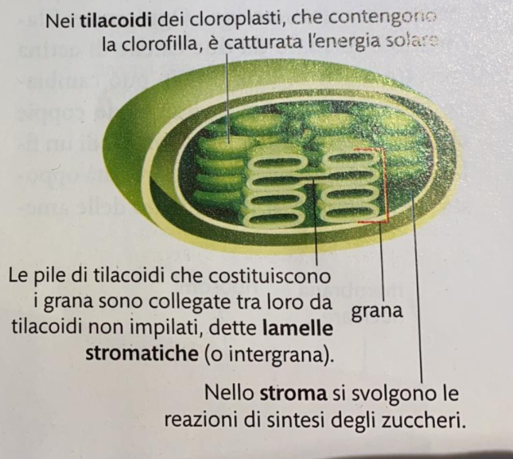

Nucleo con materiale ereditario
Citoplasma
Materiale Plasmatico
I Ribosomi
Il reticolo endoplasmatico
I Mitocondri
Perosisomi
Apparato di Golgi
Citoscheletro
↓
Condividono con gli animali
↓
Parete Cellulare
Cloroplasti
Vacuolo Centrale
Organo delimitato a membrana con la funzione di immagazzinare acqua.
Regola le scambio di sostanze.
Sede del processo di fotosintesi.
Parete spessa e rigida data la sua consistenza di cellulosa, per proteggere la cellula e mantenere la forma.


Presenti in
Delimitati da
↓
Membrana Esterna (liscia, con funzione di protezione)
↓
Membrana Interna
↓
Matrice Mitocondriale
↓
Ribosomi
DNA
Enzimi
↓
Respirazione Cellulare
Delimitati da una doppia membrana che racchiude:
Dischi ricavati dal ripiegamento della membrana (cloroplasto)
↓
I ripiegamenti formano i "Grand"
↓
I Tilacoidi contengono dei piegamenti
↓
Il più importante è la clorofilla, in grado di catturare la luce per la fotosintesi
Matrice in cui sono ammessi i "Grand"
↓
Sono presenti DNA e RIBOSOMI
↓
Utilizzati per la sintesi di alcune proteine

Le cellule vegetali di una pianta possono avere una forma diversa in base alla funzione che svolgono
↙
↘
È piatta, permette l'ingresso dell'anidride carbonica nelle foglie, sulla superficie sono presenti delle aperture, dette stomi
Vasi per trasporto dell'acqua e dei sali minerali delle radici alle foglie di una pianta sono formati da cellule allungate